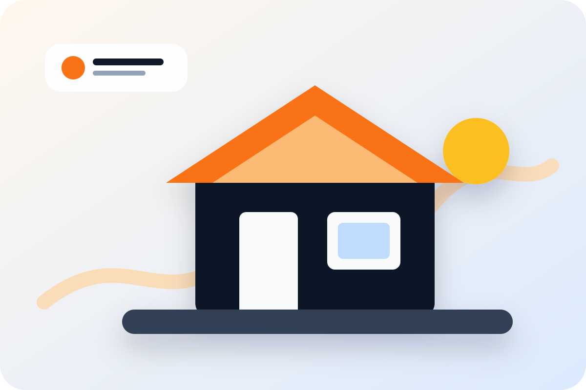

Личный контроль
Проверка ключевых этапов, согласование решений и приёмка перед сдачей.
Берём квартиры, дома и коммерческие помещения под ключ: фиксируем объём работ, управляем материалами, показываем этапы и сдаём объект с понятной гарантией.


«Моя задача — чтобы клиент понимал, за что платит, видел ход работ и получил объект без бесконечных доплат и переделок».
Проверка ключевых этапов, согласование решений и приёмка перед сдачей.
Фиксируем работы, сроки, ответственность и гарантийные обязательства.
Помогаем закупать материалы по оптовым ценам и не терять деньги на снабжении.
Популярные направления на главной, все услуги — на отдельных SEO-страницах для продвижения по конкретным запросам.
Ровные стены машинным способом для квартир, домов и коммерческих помещений.
Подробнее →Аккуратная ручная отделка сложных зон, откосов и помещений нестандартной формы.
Подробнее →Полный цикл ремонта квартиры: от демонтажа и инженерии до чистовой отделки.
Подробнее →Комплексный ремонт частных домов с инженерией, отделкой и управлением материалами.
Подробнее →Ремонт офисов, магазинов, производственных и общественных помещений.
Подробнее →Финишная и декоративная отделка под бренд, поток клиентов и эксплуатацию.
Подробнее →Тёплое и холодное остекление частных домов с подбором профильных систем.
Подробнее →Окна, балконы и лоджии с замером, доставкой и аккуратным монтажом.
Подробнее →Витражи, входные группы и оконные конструкции для бизнеса.
Подробнее →Дизайн-проект, строительные работы, черновые и чистовые материалы, мебель, техника и сдача объекта под ключ.
Не абстрактное «качественно и быстро», а конкретные условия, которые снижают риски клиента.
Договор, смета, этапность, гарантия и понятные обязательства сторон.
Стоимость работ не меняется без согласования дополнительных задач.
Отправляем фото и видео по ключевым этапам, чтобы вы видели прогресс.
Гарантийные условия прописываются письменно, а не остаются на словах.
Помогаем закупать материалы без лишних наценок и хаоса на объекте.
Составляем план работ и контролируем выполнение этапов.
В демо-версии квиз показывает сценарий. На WordPress его можно подключить к формам, Telegram и целям Яндекс Метрики.
Структура блока готова под реальные фото: площадь, сроки, бюджет, состав работ и результат.

Демонтаж, электрика, сантехника, штукатурка, шпаклёвка, чистовая отделка и сдача объекта.

Отделка, перегородки ГКЛ, электрика, сантехника и подготовка помещения к запуску.
Работы для завода/склада/распределительного центра с отчётностью и документами.
Блок подготовлен под реальные фотографии объектов, фильтры по услугам и открытие фото в полном размере.

Понятный процесс от первого обращения до сдачи объекта.
Вы оставляете контакты и коротко описываете задачу.
Уточняем объект, сроки, пожелания и формат работ.
Специалист осматривает объект и фиксирует вводные.
Готовим прозрачный расчёт по работам и материалам.
Фиксируем условия, сроки, этапы и гарантию.
Выполняем ремонт с регулярными фотоотчётами.
Проверяем качество, убираем замечания и передаём объект.
Добавлены шаблоны под скриншоты, видеоотзывы и отзывы с карт. После получения реальных материалов блок меняется без перестройки дизайна.
Реквизиты, договор, гарантийные обязательства и закрывающие документы.
Место для видео процесса работ, обзоров готовых объектов и обращения собственника.
Интерактивный раздел для объектов в Челябинске, области и коммерческих площадок.
В v2 добавлен дизайн-блок под карту. В рабочей версии сюда можно подключить Яндекс.Карты с объектами, фильтрами по услугам и ссылками на кейсы.
10 вопросов закрывают ключевые возражения перед заявкой.
Да. После замера и согласования состава работ фиксируем стоимость в договоре, а дополнительные работы согласуем отдельно.
Да. Выполняем ремонт, отделку, остекление и инженерные работы для офисов, производств, магазинов и распределительных центров.
Гарантия до 2 лет. Конкретные условия зависят от вида работ и прописываются в договоре.
Да. Специалист выезжает на объект, оценивает объём работ, задаёт вопросы и готовит смету.
Да. Можем вести снабжение объекта и закупать материалы по оптовым ценам.
Да. Берём объект от первичной консультации и сметы до финальной сдачи.
Да. Подготовим КП для частного или коммерческого объекта после уточнения вводных.
Отправляем фото и видеоотчёты по этапам, согласуем важные решения и фиксируем изменения.
Да. В договоре фиксируются состав работ, этапы, сроки, ответственность и гарантийные обязательства.
Тип объекта, площадь, адрес/район, вид работ, фото или видео текущего состояния и пожелания по срокам.
Егор Платонов — строительная команда для ремонта квартир, домов и коммерческих помещений под ключ в Челябинске и области. Мы работаем с объектами, где важны понятная смета, официальный договор, контроль качества и прогнозируемый результат.
Компания выполняет механизированную и ручную штукатурку, шпаклевку стен, монтаж гипсокартона, поклейку обоев, декоративную штукатурку, электромонтажные и сантехнические работы, ремонт балконов, утепление балконов и остекление.
Для бизнеса доступны ремонт и отделка коммерческих помещений, сантехника для коммерческих объектов, остекление входных групп и подготовка помещений к запуску. Для частных клиентов — ремонт квартир в новостройках, ремонт домов и комплексный ремонт под ключ.
Перед началом работ специалист осматривает объект, фиксирует вводные, готовит смету и согласует этапы. Клиент получает понятную последовательность работ, фотоотчёты и гарантию по договору.